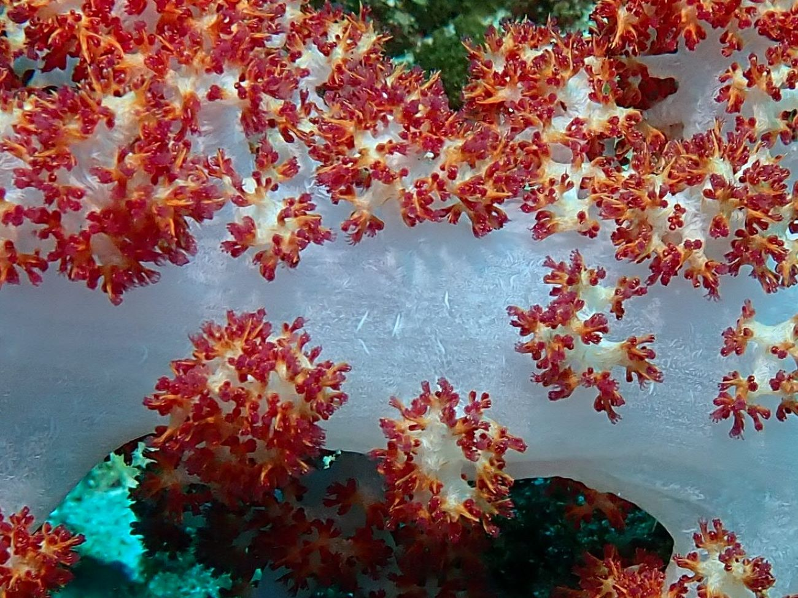
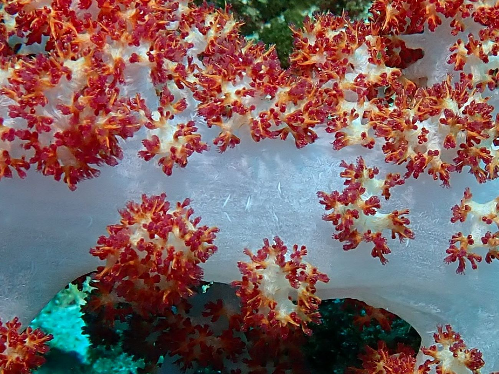

Ocean
The Andaman sea and the gulf of Thailand offer many great diving spots. However, these locations are seasonal and when it is the best season on one coastline the sea can be stormy on the other side. Because of climate change there is a shift in the monsoon pattern and while Andaman sea is known to be a good place to visit from late autumn to May, storms can come nowadays even in November. Gulf of Thailand has its best season from May to August, but sea can become rough already at the end of August- beginning of September.
Andaman sea
Koh Lanta
Koh Lanta is a small island in southern Thailand. It can be reached by flying to Krabi and then by taking about 2 hrs minibus ride followed by 10 min ferry trip to Koh Lanta. There are also ferries going from Krabi town, but minibus was the most convenient way for me.
At Koh Lanta I was diving there with Lanta diver, but there is no shortage of diving centres on the island. Also, one can go to Koh Lanta with diving companies located in Krabi town. It is a bit long trip, but it might be worth doing as it was for me when I took it with Aqua Vision diving centre.
Koh Haa


 
